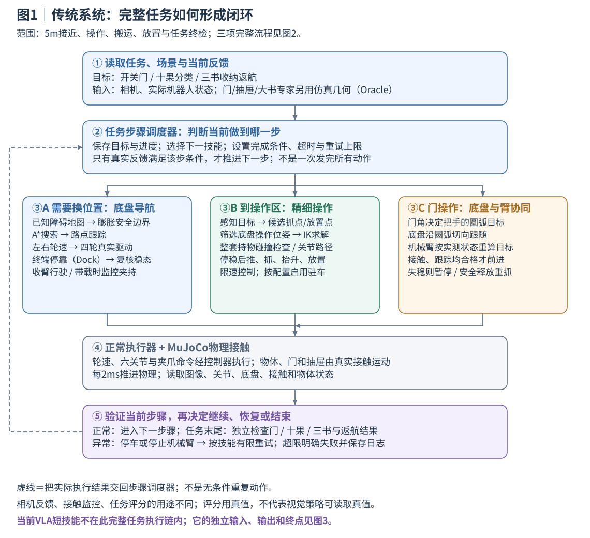
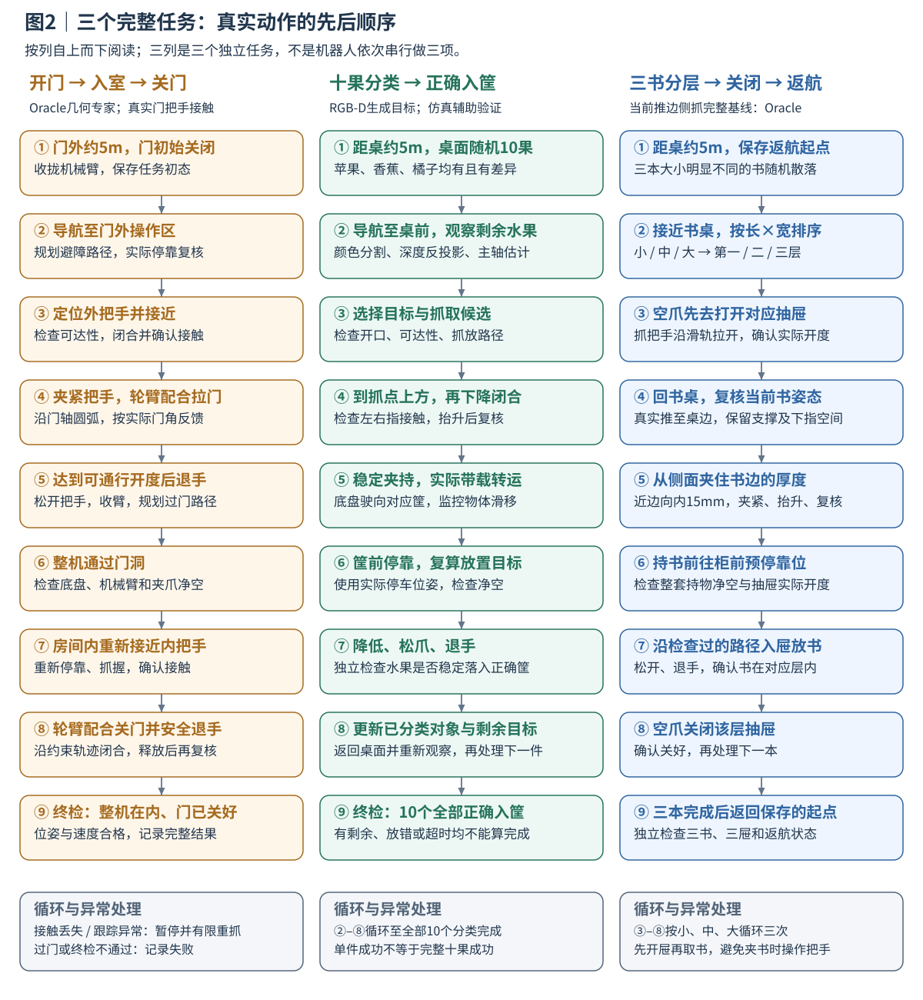
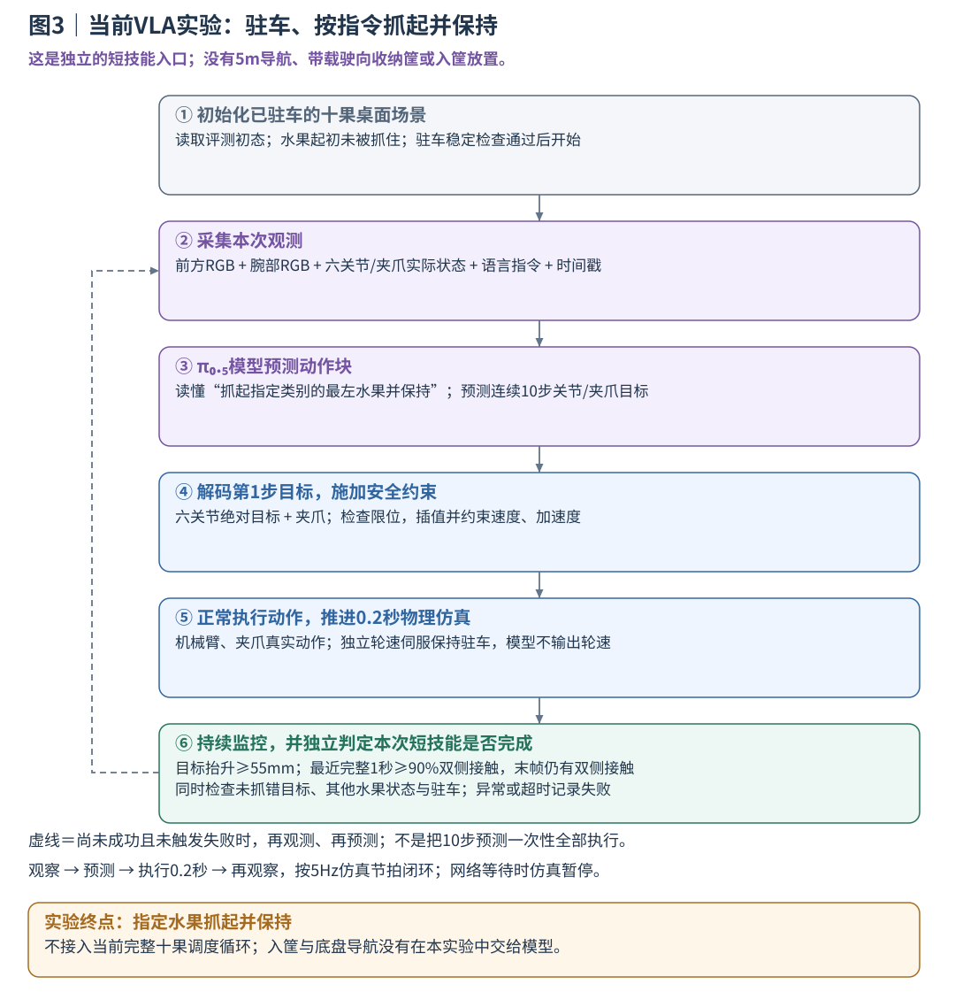

Robot VLA
移动机械臂仿真：从接触控制到视觉语言动作模型
Husky A200 · 原版 UR5 · Robotiq 2F-85 · MuJoCo 3.6.0
项目概览
本项目围绕移动机械臂的三项任务展开：开门入室后关门、将十个水果分类入筐、将三本不同大小的书放入对应抽屉并返航。机器人既要移动到合适的位置，也要在抓取、搬运和放置过程中维持稳定接触。
传统系统采用导航、几何规划与接触反馈完成任务。开发中重点处理了持书滑移误报、大书抓取空间不足、香蕉保持失稳和开门反复重抓等问题。在此基础上，进一步训练双视角 π₀.₅ 模型，探索由图像和语言直接生成抓取动作。
| 任务 | 完整流程 | 实现 |
|---|---|---|
| 开门入室 | 门外约 5 m 出发，拉开门、整机进入、从内侧关门 | 门操作 |
| 水果分类 | 桌前约 5 m 出发，将 10 个苹果、香蕉和橘子放入对应标识筐 | 水果任务 |
| 书本收纳 | 桌前约 5 m 出发，按大小将三书分层收纳、关闭抽屉并返回起点 | 书本任务 |
三个传统任务均有完整成功演示。门和书本基线使用仿真几何信息（Oracle）；水果由 RGB-D 估计目标，并结合仿真接触反馈判断执行状态。所有实验在 MuJoCo 中完成。
视频演示
第一行为三个完整任务；第二行为 VLA 在已驻车桌面上按指令抓起指定水果并保持。
 开门 · 入室 · 关门 锁边把手 / Oracle / 宽门洞 |  10果连续分类 开发回合 / 全部正确入筐 |  三书 · 三层 · 返航 120/180/240mm长书本 / Oracle |
 π₀.₅ 苹果抓取 |  π₀.₅ 香蕉抓取 |  π₀.₅ 橘子抓取 |
视频索引 · 传统 70 条视频包 · VLA 30 条视频包
实验结果
以下统计来自最终交付视频包。视频经过选取，含重复初态，传统包还包含不同开发版本，因此表中比例表示视频包内成功占比，不用于估计连续独立测试的成功率。水果和书本按单项操作统计；香蕉和大书分组还包含局部失败诊断。
| 方法 | 操作 | 成功 / 记录数 | 视频包内成功占比 |
|---|---|---|---|
| 传统方法 | 开门、入室、关门完整任务 | 10 / 10 | 100% |
| 传统方法 | 苹果抓取与放置 | 10 / 10 | 100% |
| 传统方法 | 香蕉操作 | 9 / 10 | 90% |
| 传统方法 | 橘子抓取与放置 | 10 / 10 | 100% |
| 传统方法 | 小书收纳 | 10 / 10 | 100% |
| 传统方法 | 中书收纳 | 10 / 10 | 100% |
| 传统方法 | 大书操作 | 7 / 10 | 70% |
| VLA | 苹果抓起并保持 | 9 / 10 | 90% |
| VLA | 香蕉抓起并保持 | 7 / 10 | 70% |
| VLA | 橘子抓起并保持 | 9 / 10 | 90% |
关键问题与改进
持书转向：先修正检测量，再判断是否滑移
书仍夹在手中，程序却在转向时触发滑移保护。排查发现，旧指标在世界坐标下比较书与夹爪的偏移，把随夹爪旋转产生的变化也算成了滑移。改为工具坐标后，同一时刻的检测值由 25.03 mm 变为 2.83 mm，原报警阈值保持不变。修复后，第三本书从检查点继续完成了收纳和返航。
大书抓取：先创造夹持空间
大书的宽度超过夹爪开口，贴着桌面时下指也无法进入。方案改为先将书推到桌边、保留支撑，再从侧面夹住厚度。搬运时将书和相机支架一起纳入碰撞检查，并检查抽屉把手附近的通行空间。
香蕉保持：抓起与稳定夹持需要分开处理
香蕉抬起后仍会在两指间缓慢滚转。局部实验中，持续满闭合在保持阶段失败；建立抓握后将闭合量调整为 0.70，则完成了约 0.38 m 倒车。两次实验从已持物状态开始、持续时间不同，说明了保持控制的作用，后续还需检验更复杂的转弯与接触状态。
门操作：减少重复松手与重新定位
用门角统一组织底盘运动和把手轨迹，使底盘随开门进度移动，机械臂根据实际位置修正动作。同一起点的完整任务中，夹爪闭合次数从 36 次降到 5 次，仿真耗时从 2144.9 秒降到 462.3 秒，减少约 78%。
架构
传统系统由任务状态机安排导航、抓取、搬运和放置；每一步根据接触、位姿和任务结果决定继续、重试或停止。导航负责底盘路径，几何规划与逆运动学负责机械臂目标，执行器在物理仿真中完成动作。

水果通过颜色分割、深度反投影和主轴估计生成抓取目标。书本先打开对应抽屉，再回桌取书；门操作则让底盘和机械臂共同跟随把手圆弧。

VLA 与传统系统共用机器人和底层执行器，目前承担已驻车状态下的指定水果抓取保持，尚未接入导航或入筐流程。

进一步探索：VLA 训练
以传统操作示教为基础，使用前方和腕部两路 RGB、实测关节状态及语言指令，对 π₀.₅ 进行后训练。模型输出六个关节的绝对目标和夹爪闭合量；以 5 Hz 预测 10 步动作，每次执行 1 步后重新观察。
训练使用 405 个片段、25,517 帧，batch size 为 4，完成 10,000 次更新。当前已经获得多类水果的抓取实例，接下来的重点是定位目标选择、接近和闭合阶段的失败，并扩展到抓取后放置。
运行与资料
仿真环境为 Ubuntu 22.04、Python 3.10、MuJoCo 3.6.0。安装步骤与三个任务的命令见运行说明。
git clone https://github.com/li2311675549/robot-vla.git
cd robot-vla
# 在已安装依赖的仿真环境中运行门任务
MUJOCO_GL=egl python scripts/run_stage7_isolated.py \
--task door --mode oracle --seed 2101 \
--door-profile aligned_handles_v3 \
--config configs/door_continuous_contact_frozen_v4.json \
--output outputs/new_door_demo --record
| 资料 | 内容 |
|---|---|
| 技术报告 / 离线 HTML | 系统设计、关键改进与实验分析 |
| 实现解析 | 感知、规划、抓取与轮臂配合 |
| 运行说明 | 环境安装、任务运行与评测入口 |
| 测试记录 | 代码测试、模型加载和数学检查 |
| 完整附件 | 视频包、报告与原始记录 |
源码在 src/robot_exam/，场景与配置在 scenes/、configs/，实验记录在 evidence/，历史源码在 benchmarks/frozen/。VLA 复现还需要模型权重、Tokenizer 和原始训练数据，这些文件未随仓库发布。第三方模型和代码的许可随各资产保存。